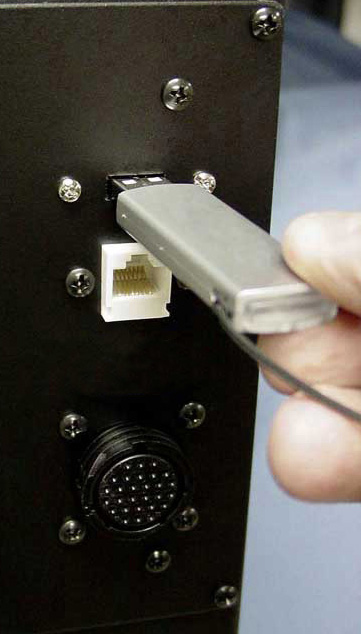

Deliverable: Proper g-code part program is loaded onto the machine.

Loading G-Code from a USB Key on a Centroid control...
You'll need to load the g-code part program onto the machine as part of setting it up to run the part. Depending on your machine, this can be done in a variety of ways:
- Older machines may require you to load g-code from a floppy disk or even paper tape (that's REALLY old!).
- Newer machines load via USB thumb drive.
- Your machine may be connected to the local area network allowing you to load just by putting the g-code in a particular folder or by FTP'ing the code to the machine.
- Your machine may be connected via RS-232 connection and g-code can be downloaded via that connection or drip fed to the machine a few lines at a time.
Here are some important things to check for:
- Make sure you have the proper version fo the program. It's easy to wind up with a lot of different versions floating around, so make sure you've got the right one.
- Load any subprograms or library routines that your main part program may require. For example, if your part program uses a probe, it may rely on a library of probing routines to be available.
- Know what the part program expects from the operator. Does it have optional stops? Do you need to enable them on the control? Etc. This information should be documented in the Setup Sheet.
|